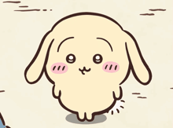
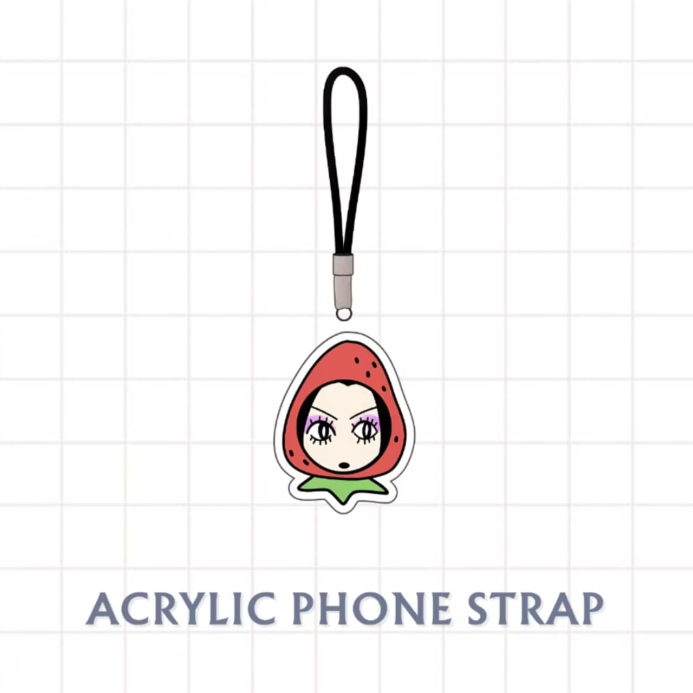
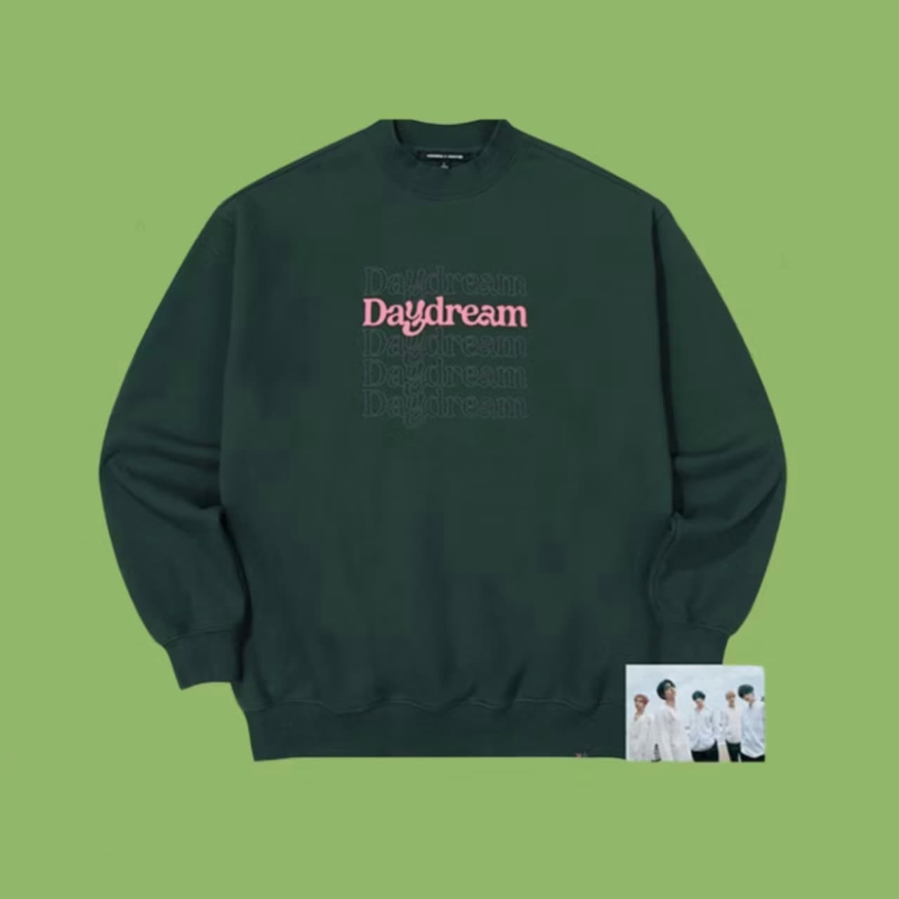
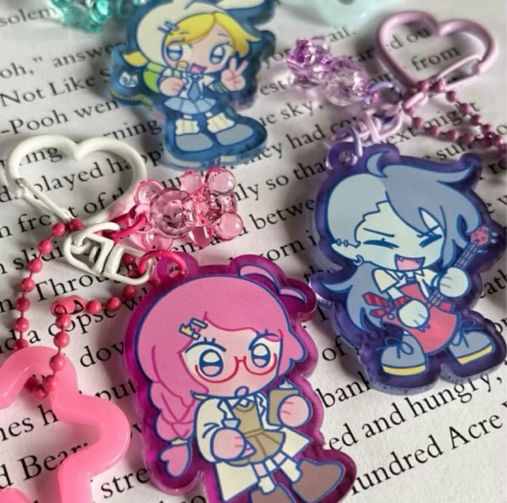

happy birthdayy paniiwww!
I hope all things and everything best for you ( ﾉ^ω^)ﾉ

Your gift is on the wayyy
Im sorry that the gift will be late, two of them will come around 11 to 15 dec; and the last one will come around 17 to 18 dec (very late because of po). (ー_ー;)

SURPRISEEE ( ☆∀☆)
Lets reveal thinngs that i bought for you!!

nana phones trap!!
you asked for a nana phone strap recommendation and told me that you needed one.

Sweater (ﾟーﾟ*)
a Conan Gray reference... hehe. Seharusnya 3rd of december but again aku lupa kalo ngirim ke kamu takes more time :p.

Bonnabel keychainnnn!!!
I promised you to give this keychain and couple with me; so here it is!
( ￣▽￣)